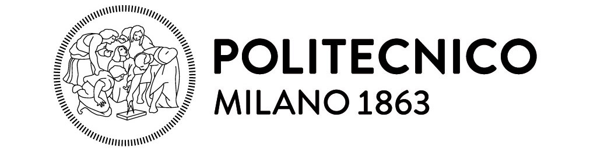

Politecnico di Milano che, grazie alla competenza dei suoi ricercatori, ha messo a disposizione il “motore” del nostro software: l’algoritmo basato su avanzate tecniche di data mining e machine learning

Secure Network che ha contribuito a rendere il motore efficace negli ambienti finanziari, grazie all’esperienza pluriennale nei sistemi antifrode bancari

Buildo che ha contribuito alla solidità del sistema, rendendo il software flessibile, stabile e pienamente fruibile per ogni tipo di utente